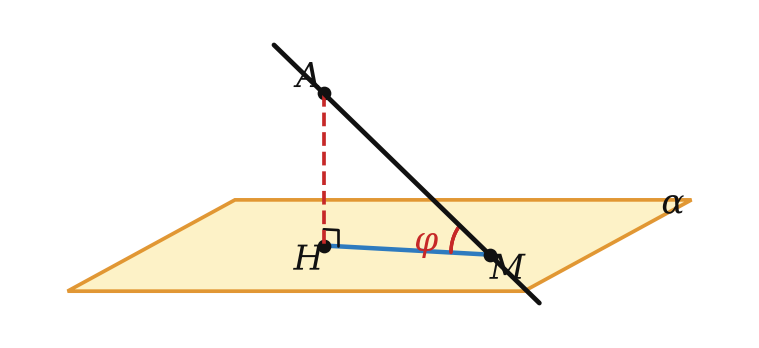
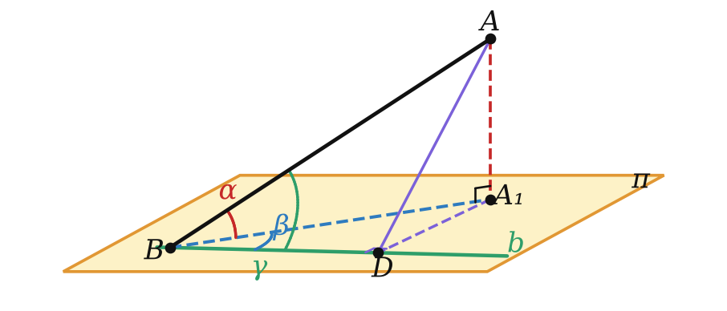
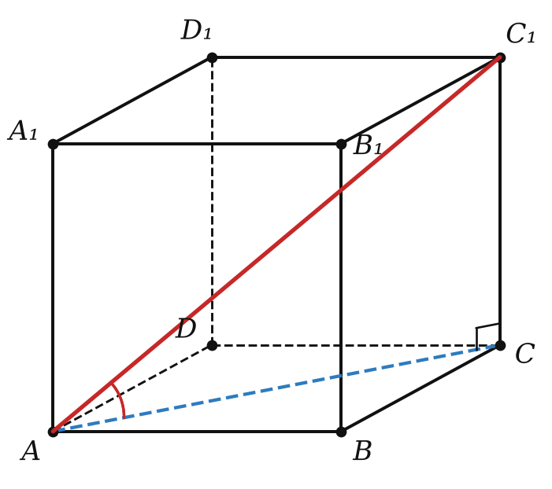

Теория
Штурманы когда-то определяли положение корабля по углу между лучом на звезду и плоскостью горизонта. Строители говорят об «уклоне» крыши и пандуса. Нужно понятие угла между прямой и плоскостью. Естественная идея: сравнить прямую с её «тенью» на плоскости.
- Если прямая параллельна плоскости или лежит в ней, угол между ними равен 0°.
- Если прямая перпендикулярна плоскости, угол равен 90°.
- Если прямая пересекает плоскость и не перпендикулярна ей, углом между прямой и плоскостью называют угол между прямой и её проекцией на плоскость.

Итак, 0° ≤ φ ≤ 90°. Угол между отрезком и плоскостью — это угол между прямой, содержащей отрезок, и плоскостью. В прямоугольном треугольнике AHM: sin φ = AH/AM (расстояние до плоскости делить на наклонную), cos φ = HM/AM, tg φ = AH/HM.
Пример: в кубе прямая AB — проекция диагонали грани AB₁ на плоскость ABC, поэтому угол между AB₁ и плоскостью ABC равен ∠B₁AB = 45°.
Угол берут между прямой и её проекцией, а не между прямой и какой-нибудь другой прямой плоскости. С другими прямыми плоскости угол может быть больше.
Если из одной точки к плоскости проведены наклонные, образующие с плоскостью равные углы, то проекция точки равноудалена от оснований наклонных.
Почему: прямоугольные треугольники MOA и MOB имеют общий катет MO и равные противолежащие ему углы, значит, равны, и OA = OB. Обратное тоже верно: равные наклонные образуют с плоскостью равные углы.
Формула трёх косинусов
Прямая a образует с плоскостью π угол α (0° < α < 90°). Прямая b плоскости π образует с прямой a угол γ, а с проекцией прямой a — угол β. Тогда cos γ = cos α · cos β.

Пусть a пересекает π в точке B, A ∈ a, A₁ — проекция A, b проходит через B. Опустим AD ⊥ b; по теореме о трёх перпендикулярах A₁D ⊥ b.
Из трёх прямоугольных треугольников: cos γ = BD/AB, cos α = BA₁/AB, cos β = BD/BA₁. Перемножим два последних: cos α · cos β = BD/AB = cos γ. ∎ (Случаи β = 0° и β = 90° проверяются отдельно.)
Так как cos β ≤ 1, то cos γ ≤ cos α, то есть γ ≥ α. Вывод: угол между прямой и плоскостью — наименьший из углов между этой прямой и прямыми плоскости.
Разбор примеров

Найдите угол между диагональю AC₁ куба и плоскостью его основания ABC.
CC₁ ⊥ (ABC), значит, AC — проекция AC₁, искомый угол — ∠C₁AC. Пусть ребро равно a: AC = a√2, tg ∠C₁AC = a/(a√2) = √2/2. Ответ: arctg (√2/2) (примерно 35°).
MA ⊥ плоскости ABC, MA = 4√3, AB = 4, AC = 12. Найдите углы, которые образуют с плоскостью ABC прямые MB и MC.
AB и AC — проекции. tg ∠MBA = 4√3/4 = √3 ⟹ 60°; tg ∠MCA = 4√3/12 = √3/3 ⟹ 30°. Чем дальше основание наклонной от основания перпендикуляра, тем «положе» наклонная.
Прямая образует с плоскостью угол 45°. Прямая плоскости проведена через точку пересечения и образует с проекцией данной прямой угол 60°. Найдите косинус угла между этими прямыми.
cos γ = cos 45° · cos 60° = (√2/2) · (1/2) = √2/4.
Не путай: в формуле cos γ = cos α cos β угол α — с плоскостью, β — между прямой плоскости и проекцией, γ — между прямой плоскости и самой наклонной.
Задачи урока
Реши в тетради, к каждой задаче — чертёж. Разберём на занятии.
Тест к уроку
Домашнее задание
Задачи Д1–Д6 ниже, к каждой — рисунок с проекцией наклонной. Из учебника: № 13.1, 13.7, 13.12, 13.27. Выучить определение угла между прямой и плоскостью и формулу трёх косинусов (с выводом).